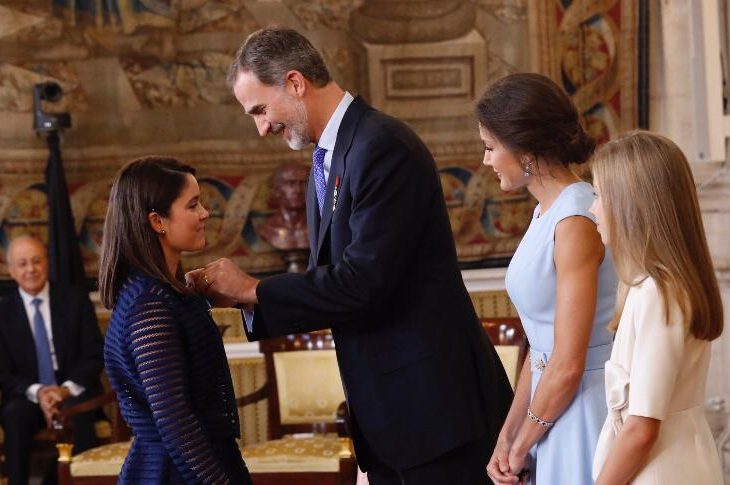

|
Raquel Serrano, de Alhaurín de la Torre, se graduó en 2014 en Ingeniería de Diseño Industrial y Desarrollo del Producto por la UMA, tras lo que siguió formándose hasta que le comenzó a picar “el gusanillo del emprendimiento”. Dos años después de obtener su título, creó su propia empresa, Fiixit. “Diseñamos férulas a medida de lo que realmente el paciente necesita, además se puede empezar una fisioterapia de forma conjunta a diferencia de las escayolas”, explicó Raquel. Con apenas 29 años, Raquel Serrano Lledó ha revolucionado el concepto tradicional de escayola con sus férulas hechas con impresoras 3D: se pueden mojar, son más ligeras, evitan los picores y, además, son biodegradables. |
|---|
|  |
La lista de premios y reconocimientos es, cuanto menos, extensa. Sin ir más lejos, el presidente de la Junta, Juanma Moreno, le recibió el pasado 15 de julio para destacar su talento. Y el pasado 19 de junio, el propio Rey Felipe VI le condecoró con la medalla de la Orden del Mérito Civil, cuyo título ahora Raquel luce orgullosa aguandando las puertas del taller de Fiixit. A partir de entonces, se sucedieron una cadena de éxitos. Ese mismo año entró a formar parte del programa de Fomento de Empresas Andaluzas Innovadoras en Nuevas Tecnologías de la Información del Centro Andaluz de Innovación y Tecnología de La Información y de las Comunicaciones (Citic). En 2016, ganó el Yuzz Málaga, dirigido a jóvenes con ideas de negocio de base tecnológica y pudo viajar a Silicon Valley.También ese año Fiixit ganó el Premio Junior del Instituto Municipal de Formación y Empleo. |
|---|